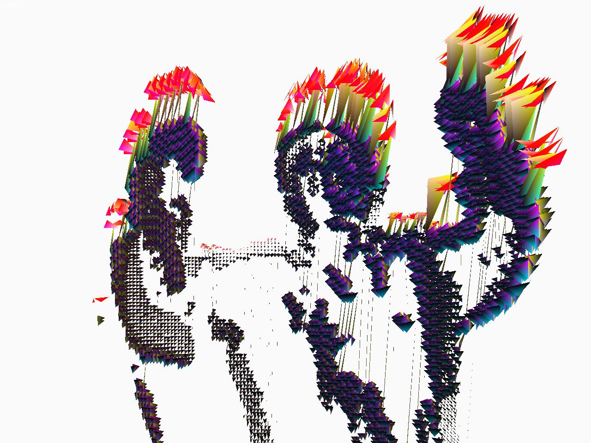

כללי
emotion היינה יצירת אומנות המוצגת באמצעות מחשב. היא עושה שימוש במצלמת web על מנת לייצר תרשים שהוא ביטוי של התנועה כפי שנקלטה על ידי המצלמה.
פרטים נוספים על הפרויקט תוכלו למצוא כאן:
http://www.mulix.org/agmon/e-motion.html
התוכנה עובדת רק תחת חלונות והיא משוחררת תחת רשיון gpl. ניתן להוריד את קוד המקור מהאתר:
דרישות חומרה
המינימום הינו מחשב סלרון בתדירות 1.5Ghz המצוייד בכרטיס מסך הכולל לפחות 128 מגה זכרון. התוכנה תעבוד גם על מחשבים חלשים יותר, אך חווית השימוש תהיה פחות נעימה.
ככול שהמחשב יהיה חזק יותר, כך התוכנה תתפקד באופן טוב יותר.
הפעלה
יש לחבר את מצלמת ה- web למחשב ולוודא שאף תוכנה אחרת לא עושה בה שימוש.
הגדרות
F1 אודות, עזרה לגבי המסכים השונים.
F2 מקשי הניווט המאפשרים שינוי זווית הראיה.
F3 הגדרות אופן הצגת האובייקטים.
F4 היצירה מגיעה עם עשרות מודולים שניתן לבחור אילו מהן יוצגו. באמצעות מסך זה ניתן להגדיר את המודולים הנבחרים.
F5 הגדרת זוויות הראיה באמצעות הזנת ערכי מיקום המצלמה והאובייקטים.
פירוט הגדרות התוכנה
מסך F3 הוא בעל קריטיות לפעולת התוכנה.
Refresh rate קובע את פרק הזמן, במילי שניות, המציג תמונה חדשה. הערך הנמוך ביותר הוא 10 מילי שניות ובו גם תתקבל התצוגה הנאה ביותר.
Change drawing every מגדיר את פרק הזמן שבו כל מודול יוצג.
Change color every מגדיר את פרק הזמן שבו צבעי המודול ישתנו. כל מודול יכול להיות מוצג בכמה עשרות ערכות צבעים.
Camera factor קובע את צפיפות המודול המוצגת על המסך. במחשבים חזקים, מומלץ להזין את הערך 1. במידה וכרטיס המסך מכיל מעט זיכרון, יש להזין 2. אם המחשב מאוד חלש -3.
Color difference threshold ו- Minimal number of Neighbor pixels הם פרמטרים המשפיעים על האופן שבו תמונה נקלטת על ידי התוכנה. יש לשנותם במידה ונתקלים בהצגה של "רעשים". פרמטרים אלו צריכים להיקבע בהתאם לאיכות המצלמה ולתנאי הצילום.
Color difference threshold קובע את הניגודיות של התנועה. במידה והתוכנה מתקשה להפריד בין התנועה לבין הרקע, יש להגדיל את הערך.
Minimal number of Neighbor pixels הוא מספר הנקודות המקיפות נקודה על מנת שתיחשב כחלק מהתנועה. המספר המקסימלי הינו 9.